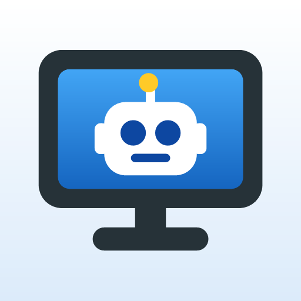
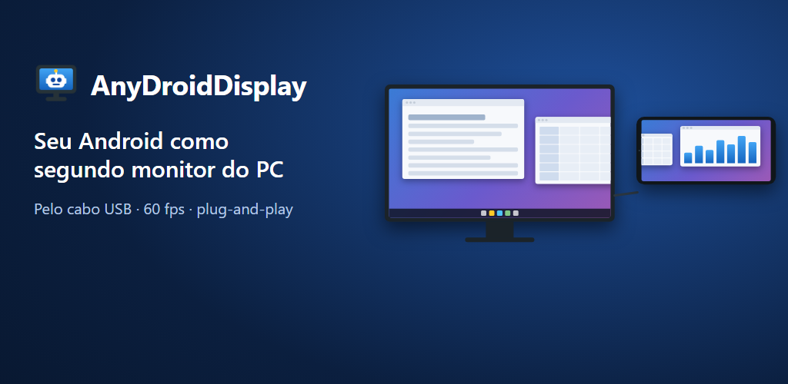
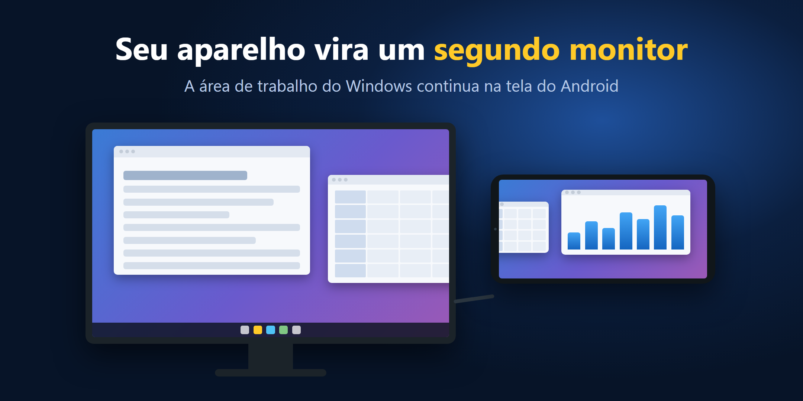
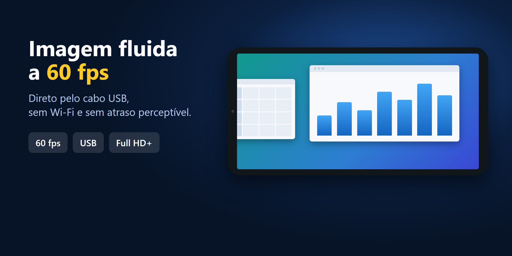
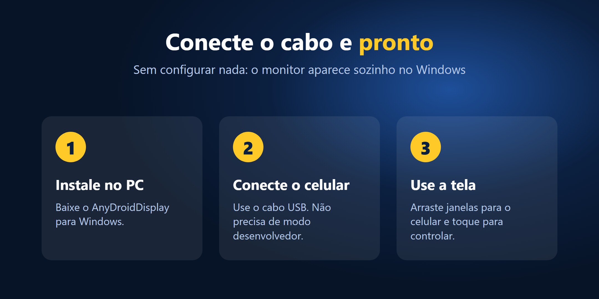

AnyDroidDisplayConecte o celular ou tablet pelo cabo USB e ele vira um monitor de verdade: plug-and-play, até 120 Hz e cerca de 20 ms de atraso, com a codificação feita na placa de vídeo.
Windows 10 ou 11, 64 bits. O download será liberado em breve.

Conectou o cabo, a tela aparece. Não precisa ativar a depuração USB nem configurar nada no aparelho.
60 Hz em qualquer aparelho e até 120 Hz nos que têm tela rápida, com atraso de cerca de 20 a 30 ms.
Toque na tela para usar como mouse. Se quiser, o som do PC também sai no aparelho.


